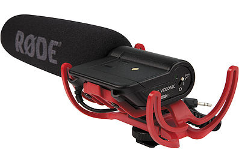

4783-7221
15-66533319
PIVOTPOINTZN
ALQUILER DE EQUIPOS
pivotpointzn@gmail.com
Belgrano R. Buenos Aires.
EQUIPOS
SONIDO
Todos nuestro stock de equipos de sonido detallados por modelos, caracteristicas y marcas.
ILUMINACIÓN Y GRIP
Todos nuestros equipos de iluminación, detallados por modelo, caracteristicas y marcas.
FOTOGRAFÍA
Todos nuestros equipos de fotograía detallados por modelo, caracteristicas y marcas.
Sonido

GRABADORA ZOOM H4N
con patrón polar modificable entre 90º y 120º.
/ Phrase / Trainer y Tuner

GRABADORA TASCAM DR-680
muestreo 44.1 / 48, 96 / 192 Khz, (solo en PCM).
MIC. SHENNEISER MKH416
adversas.
MIC. RODE NTG3

VIDEO MIC (Directo a Cámara)
MIC. SENNHEISER EW112 G3
12 frecuencias compatibles
interferencia RF cuando el transmisor se apague
de frecuencias disponibles
BLIMP RODE
de montura de choque para cualquier micrófono shotgun
mayor a 325mm de longitud.
y el ruido del viento.
shotgun mayores a 325mm (12 ¾”) en longitud.
mediante 3/8” acoplamiento de hilos a la base.
CAÑA RODE
CAÑA INDI
CAÑA INDI XL
CABLE XLR
amplificadores y unidades de efectos.
sobretodo los de 4 y 5 pines.
en la versión de 4 pines del conector XLR
Iluminación y Grip
FRESNEL DEXEL 2000W

FRESNEL DEXEL 1000W
FRESNEL DEXEL 650W
PAMPAS 4 FOCOS
ambos o por separado, con recambio de focos.
TRÍPODE DEXEL 45-25
TRÍPODE MANFROTTO 052B
TRÍPODE KUPO ARAÑA
para diferentes condiciones de suelo.
BRAZO MAGÍCO
AVENGER D-520
Fotografía
FLASH VISICO 600W
sincronización / botón de prueba
regulador automático del voltaje de circuito
SOPORTE PORTATIL
PARA FONDO INFINITO
y 3/8" para el encastre del barral o de rótula (no incluida)
EMISOR DE RADIO
VISICO VC-816-TX
entorno y de posibles interferencias)
con zapata por contacto central.
un botón de testeo y un LED de estado de funcionamiento
SOFTBOX VISICO
del flash permitiendo una iluminación uniforme.
ABRAZADERA PHOTTIX
como una puerta, una estantería o una mesa.
(incluída) podemos montar en la abrazadera
Multi Clamp un flash o un adaptador para paraguas.